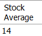
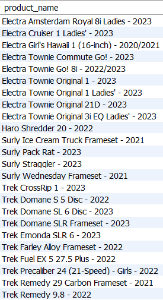
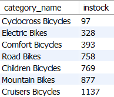
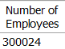
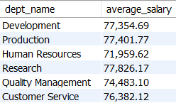

Instructions: Write SQL queries that will answer the questions or comments below. Write all of them in one .sql file and submit that .sql file. Use comments to number each query. Not all queries must use an aggregate function or a group by clause.
1. Get the average quantity that we have in all our bike stocks. Round to the nearest whole number.

2. Show each bike that needs to be reordered. In other words, filter the results to only those bikes with a quantity of zero. Order by product_name. (Hint: Two different stores have the same bike that needs to be reordered, you only need it to show once.)

3. How many bikes for each category of bike do we have in stock at our "Baldwin Bikes" store. We need to see the name of the category as well as the number of bikes in the category. Sort it by lowest numbers first.

4. How many employees do we have?

5. Get the average salaries in each department. We only need those departments that have average salaries that are below 80,000. Format the salary to 2 decimal places and a comma in the thousands place.

6. Find out how many females work in each department. Sort it by department name.